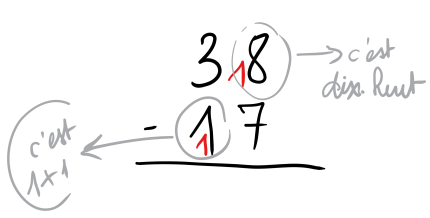
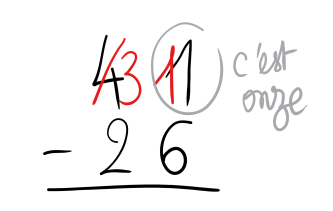

La soustraction posée ne doit pas être vue, comme les autres opérations, comme une technique à apprendre pour elle-même. La technique pour la technique, cela n’a aucun sens. C’est un outil pour résoudre des problèmes.
Pour construire la soustraction, il faut travailler la mémorisation de résultats additifs, le travail des compléments, les dénombrements à rebours. La soustraction présente trois sens:
– le sens “enlever” : la soustraction correspond au calcul du reste d’une quantité d’objets. C’est le mieux compris et celui qu’on utilise pour introduire le signe. Cela peut se représenter en dessinant et barrant des représentations. Ce sens est adapté lorsqu’on enlève une petite quantité.
– le sens “pour aller à” : la soustraction correspond à calculer un complément. Cela correspond aux problèmes dans lesquels on cherche ce qu’on a ajouté ou une partie connaissant le tout et l’autre partie. Ce sens est adapté lorsqu’on enlève une quantité importante. Le recours à la bande numérique ou à la droite graduée est alors une méthodologie pertinente.
– le sens “écart” : la soustraction correspond à calculer un écart. Cela correspond aux problèmes de comparaison (combien de plus… ?).
Les trois sens seront travaillés progressivement sur l’ensemble du cycle 2.
Soyez rigoureux sur le vocabulaire et le langage mathématique : la « différence » c’est le résultat d’une soustraction, je peux retirer 8 à 4, ce n’est pas « impossible » mathématiquement…les mots « enlever/retirer/perdre » ne signifient pas forcément que le problème sera résolu par une soustraction (donc ne l’enseignez pas !).
Le premier point qu’il faudra enseigner tout au long de la scolarité des élèves est le fait qu’il ne faut pas toujours poser l’opération. Il est ridicule de poser 100 – 10 par exemple. Dans un certain nombre de cas, ce sera plus efficace par le calcul mental. Ce sera d’ailleurs comparé dans la méthode (module 21). Mais parfois, il faut poser ou c’est plus « facile » car en calcul mental, cela peut être cognitivement trop lourd pour certains élèves.
Il existe plusieurs techniques pour la soustraction posée lorsqu’il y a retenue. Avant d’aborder la technique, il faut être certain que les élèves savent écrire et poser proprement une opération. Pour les élèves en difficulté, il existe des outils -dys (cf article).
L’idée est que la différence ne change pas si on ajoute simultanément un même nombre (en l’occurrence 10) aux deux termes d’une soustraction. Elle repose sur la propriété mathématiques: a–b = (a + c)–(b + c) (ça peut s’illustrer par la droite graduée). Elle est complexe à comprendre. Le « 10 » qu’on ajoute représente « 10 unités » en haut et « 1 dizaine » en bas. Ce double sens de la retenue est très peu compris par les élèves, y compris en CM. Ils sont incapables de l’expliquer généralement.
Méthode par cassage : on casse une barre de dizaine, une plaque de centaine. Méthode par emprunt: on s’appuie sur la règle d’échange 10 contre 1.
Je ne peux pas retirer 6 unités à 1 seule unité (à imager avec le matériel de numération). Donc je casse une des dizaines du nombre (ou j’échange). Je peux alors prendre 6 unités à 11. C’est une transformation de l’opération. C’est une technique facile à comprendre car elle s’illustre très bien avec le matériel et qu’elle s’appuie sur les règles de numération. Elle pose un problème d’écriture et de soin.
Sur le plan technique, c’est accessible car ce n’est qu’une adaptation d’une technique qu’ils connaissent déjà ! Mais la construction du sens est difficile et ils ont parfois du mal à faire du sens…